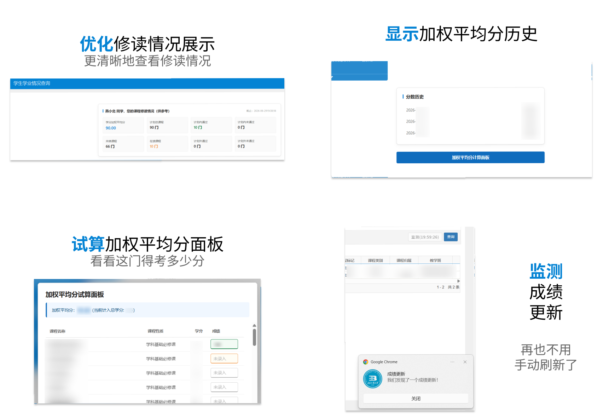

若您已经安装了 Tampermonkey（油猴 / 篡改猴）插件，请点击该 链接 添加此脚本。
若您还未安装上述插件，请使用该提示词询问 AI 如何安装：
请告诉我如何在我的浏览器上安装 Tampermonkey 插件。我的浏览器是 [浏览器名称]、系统为 [系统名称]。
在安装完成后，我希望添加脚本：https://cdn.jsdelivr.net/gh/DeepslateBricks/Advanced-BJUT-Online/advanced-bjut-online.js
如果您喜欢这个工具的话，欢迎 Star GitHub 仓库 支持我们~
若该工具违反了学校相关规定，请您通过 Issues 等方式联系我。我会在收到通知的第一时间下架相关工具或删除相关内容。
本项目为作者个人利用业余时间开发的技术交流与分享项目。本项目非学校官方授权、非官方组织开发，其所有代码及功能均不代表学校的任何官方立场。